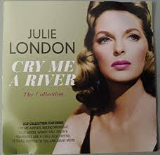

"Caught Out In The Rain" - by Beth Hart is a raw, emotional blues-jazz ballad that captures the pain and intensity of unrequited love or heartbreak. The song's powerful lyrics and Hart's soul-stirring vocal delivery express vulnerability and longing, as the narrator finds themselves exposed and overwhelmed, much like being caught in a storm. The haunting melody and passionate instrumentation mirror the turmoil of emotions, creating a visceral experience that resonates deeply with listeners. It's a song about love, loss, and the strength it takes to face the storm and carry on.
Cry me a river - Julie London

"La Chanson des Vieux Amants" - is a timeless jazz standard that conveys the anguish and bittersweet satisfaction of heartbreak and revenge. Originally made famous by Julie London, the song's sultry and emotive lyrics tell the story of someone addressing a former lover who now regrets ending their relationship. The narrator, with a sense of poetic justice, tells them it's too late for reconciliation. With its haunting melody and evocative delivery, "Cry Me a River" has been interpreted by numerous artists, each bringing their unique style to its themes of loss, regret, and emotional vindication.